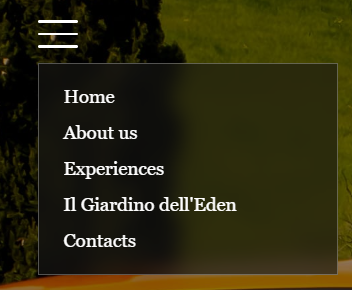
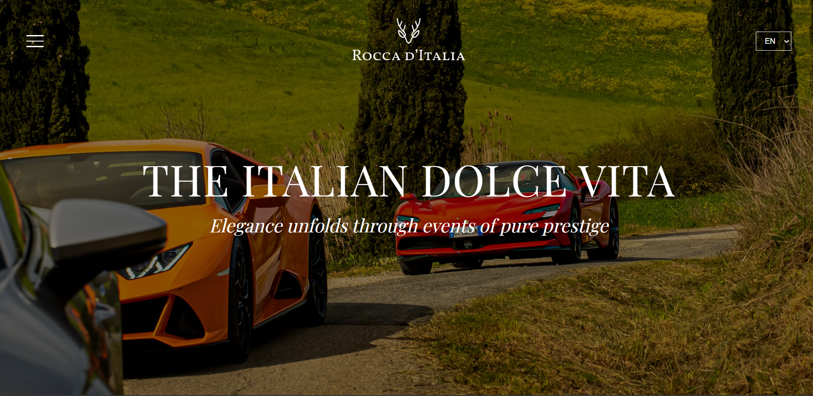
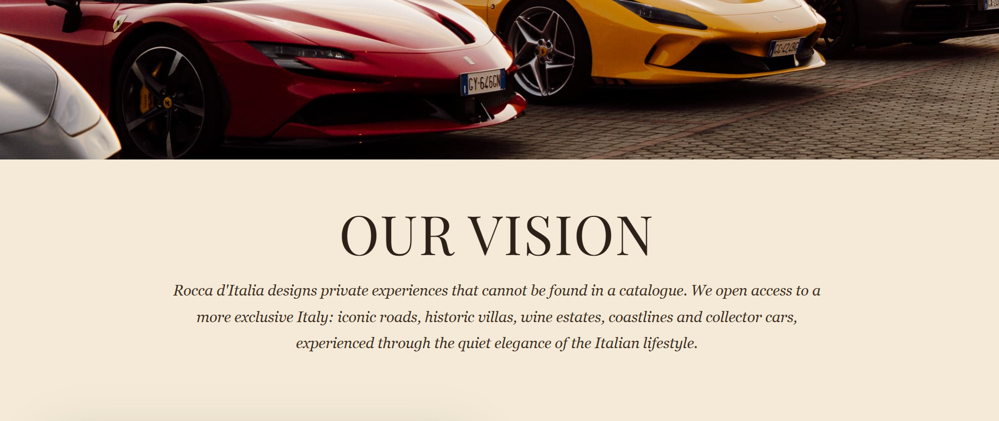
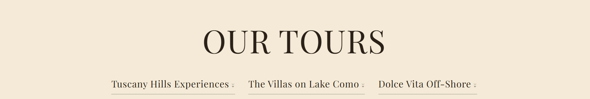
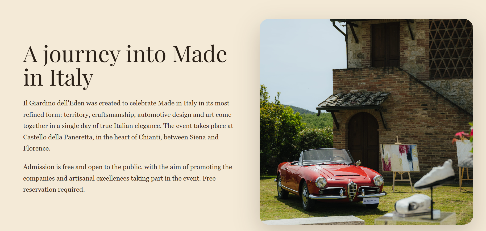
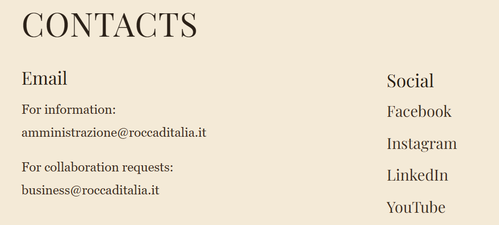
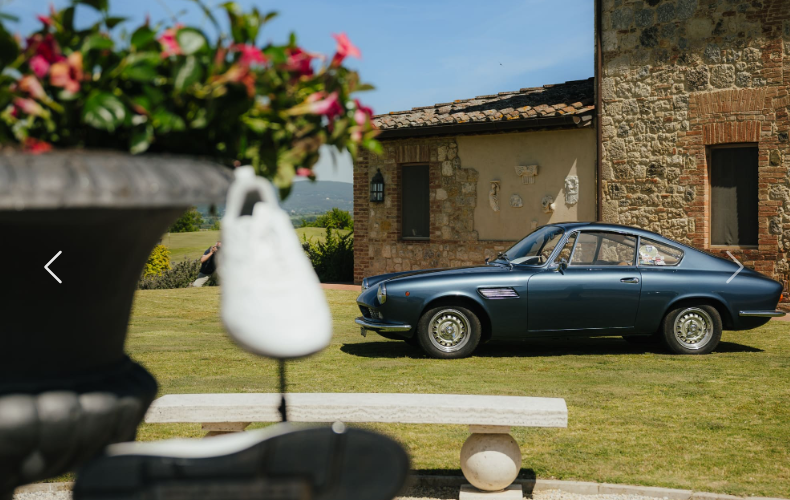

Web Communication Project
University of Milan
Rocca d'Italia is a premium Italian lifestyle company focused on private experiences, exclusive tours and curated events across Italy.
The experiences and the events are built to celebrate and enahance the beauty of Italy.
The main challenge was to translate the identity of Rocca d'Italia into a website that feels premium and elegant.
The previous Rocca d'Italia website was built on a platform that made it slow, heavy and not fully optimized for a clear user experience.
I decided to build a multi-page website, to organize the content into separate sections, creating a clear separation between on demand experiences and events.
For this reason, the project aimed to create a lighter, cleaner and more controllable website using custom HTML, CSS and JavaScript.
The website was designed for different types of users, all connected by an interest in premium Italian lifestyle experiences.
International and Italian visitors looking for exclusive experiences in Italy.
Automotive fans interested in supercars and classic cars.
Brands and companies interested in partnerships, events and premium visibility.
The website includes a home page and several internal pages, all accessible through a dropdown navigation menu.

The home page introduces the brand through a full-screen picture, a central logo, a minimal menu and a short emotional payoff.

The About Us page explains the vision of Rocca d'Italia and introduces the logic behind its experiences.

The Experiences page presents three main areas:
Internal links allow users to move directly to each section of the page.

This page presents an itinerant event format created to enhance the territory, local companies, Italian craftsmanship, automotive culture and Made in Italy.

The Contacts page provides all the essential information in a clean layout: email addresses, phone number, company address and social media profiles.
The page is designed as the final conversion point of the website.

Structure and organization of the pages.
Layout, colors and design.
Language switch, cookies and interactivity.
Carousel.
The website is built with separate HTML files for each page. I used structural elements such as:
<header> for hero and banner areas.<main> for the main page content.<section> for meaningful content blocks.<footer> for contact information.CSS was used to create an elegant visual identity across the website.
JavaScript was used for two main interactive functions:
The language system works through custom data-it and
data-en attributes in the HTML.
The website includes a cookie banner created with JavaScript. When the user accepts it, a cookie is stored and the banner is not shown again.
A second cookie stores the selected language, so the website remembers the user's preference when moving between pages.
Bootstrap was used only for the carousel component in the About Us page.

The website was designed to work across different devices:
Matteo Adamo 57539A